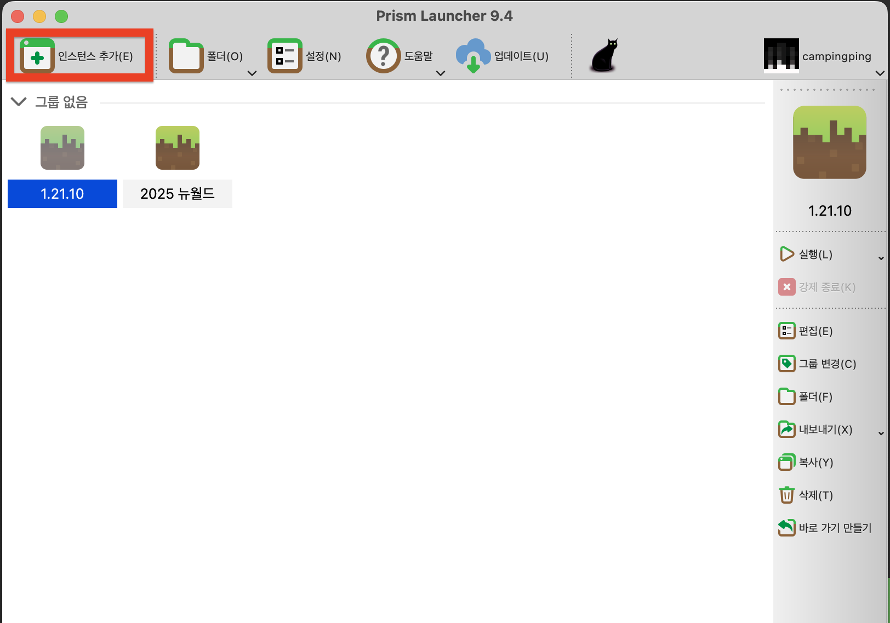
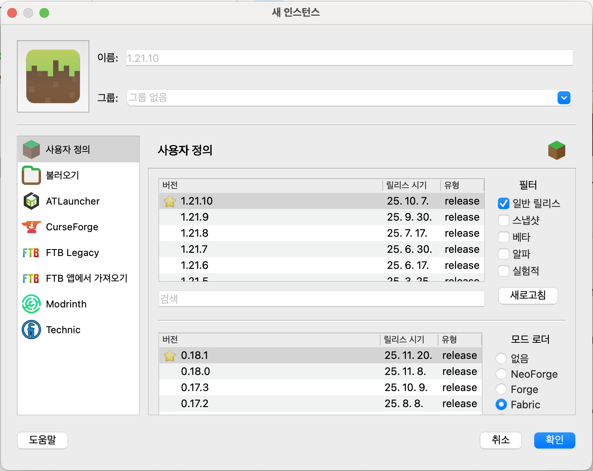

⛏️ 마인크래프트 시작하기
뉴비를 위한 Fabric + Prism Launcher 가이드

2단계: 런처 다운로드
공식 런처보다 100배 편한 Prism Launcher입니다.
모드 관리의 신세계를 경험하세요.
윈도우는 .exe / 맥은 .zip(dmg)
👉 Prism Launcher 공홈
3단계: 계정 연결
런처 우측 상단 [계정] 클릭!
Microsoft 계정으로 로그인해주세요.
※ 정품 구매한 계정 필수!
4단계: 인스턴스 생성
좌측 상단 [인스턴스 추가] 클릭!
1. 이름: 내 야생 서버 (자유)
2. 버전: 1.12.10 선택
3. 모드 로더: Fabric 체크 ✅
2. 버전: 1.12.10 선택
3. 모드 로더: Fabric 체크 ✅


🎉 준비 완료!
목록에 생긴 아이콘을 더블 클릭 하세요.
처음엔 파일을 받느라 조금 걸리지만,
곧 큐브 세상이 열립니다!
STEP 1 / 6